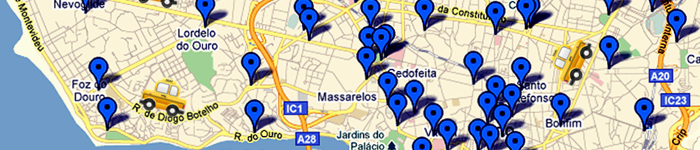

Seja bem-vindo(a) ao meu portfólio de projetos!
Aqui eu busco apresentar um pouco sobre as minhas habilidades para resolver problemas de negócios através de Análise de Dados, Estatística, Economia e Machine Learning. Já realizei projetos de elasticidade de preço da demanda, análise de market basket e recomendação de produtos, previsão de vendas e previsão de destino de táxis, classificação de satisfação de clientes, detecção de doenças em diagnósticos e detecção de fraudes, análises de scores de crédito.
A seguir, é possível encontrar informações sobre mim, meus projetos em Análise e Ciência de Dados, as habilidades e ferramentas em projetos, bem como minha experiência em resolvê-los.
Sinta-se à vontade para entrar em contato comigo através dos links disponíveis no final da página.
Mestre em Economia Aplicada pelo Programa de Pós-Graduação em Organizações e Mercados (PPGOM) e Bacharel em Engenharia Agrícola pela Universidade Federal de Pelotas (UFPel). Experiências profissionais em Análise de Mercado e Análise de Negócios. Base acadêmica com sólida formação em matemática, estatística e econometria ao longo dos anos, voltada à solução de problemas e fundamentada em dados.
Possuo experiência em Análise e Ciência de Dados em projetos pessoais, realizando Análises Exploratórias de Dados (EDA), Feature Engineering, colocando modelos de Machine Learning em produção e analisando-os através das métricas corretas.
Atualmente, estou buscando a oportunidade de trabalhar profissionalmente como Analista ou Cientista de Dados e ajudar empresas a lidar com os processos de tomada de decisão de negócios através de dados.
Projetos de Ciência de Dados
Introdução aos projetos
Os seguintes projetos foram todos desenvolvidos em Python, seguindo a metodologia CRISP-DM (Cross-Industry Standard Process for Data Mining). Cada projeto tem como foco resolver um problema de negócio específico, utilizando técnicas de análise de dados e machine learning para obter insights.
Classificação de Clientes InStyle

Problema de Negócio:
- A loja de moda InStyle enfrenta desafios significativos em relação à experiência do cliente
- A equipe foi encarregada de treinar um algoritmo para classificar clientes entre "Satisfeito" e "Neutro ou Insatisfeito", prevendo clientes insatisfeitos para agir rapidamente e reverter o cenário
Objetivos:
- Gerar insights através dos dados
- Produzir informações visuais sobre a base de clientes
- Classificar e identificar clientes insatisfeitos através de um algoritmo de Machine Learning
Benefícios:
- Elevação da satisfação do cliente
- Fidelização e retenção
- Direcionamento eficiente de marketing
- Otimização de custos
- Otimização do fluxo de trabalho
Ferramentas Utilizadas:
- Pandas, Numpy, Matplotlib, Seaborn
- Análise Exploratória de Dados
- Logistic Regression, RandomForestClassifier, XGBClassifier, LGBMClassifier
- Acurácia, Precisão, Recall, F1 Score, Classification Report e Matriz de Confusão
- Cross-Validation e Hyperparameter Tuning (RandomizerSearchCV)
Veja o projeto completo no GitHub: GitHub
Previsão de Destino de Táxis

Contexto de Negócio:
- Com as novas tecnologias, a indústria de táxis precisou se reinventar para não ficar para trás em relação aos seus novos concorrentes
- Um dos desafios é o novo sistema eletrônico de despacho em tempo real, o qual não define o destino final das corridas
- Em razão desse problema, a proposta é desenvolver um modelo preditivo que seja capaz de inferir o destino final de corridas de táxi com base em suas localizações de coleta
Objetivos:
- Entender o problema de negócio
- Análise dos dados das viagens
- Modelo de previsão de ponto de destino
- Apresentação descrevendo o problema e conclusões
Performances:
- O modelo final (LightGBM) performou bem e com resultados satisfatórios, com erros menores que 1 km
- Minimização de quilometragem vazia
- Maior satisfação do cliente
- Otimização de recursos
- Mais viagens em menos tempo
- Planejamento operacional
- Vantagem competitiva frente aos aplicativos
Ferramentas Utilizadas:
- Pandas, Numpy, Math, Matplotlib, Seaborn
- Folium
- Análise Exploratória de Dados
- LGBMRegressor
- Erro Absoluto Médio, Erro Médio Quadrático
- Pickle
- Hyperparameter Tuning com GridSearch CV
Veja o projeto completo no GitHub: GitHub
Detecção de Doencas Cardiovasculares

Contexto de Negócio:
- Cardio Catch Disease é uma empresa de saúde especializada no diagnóstico de doenças cardiovasculares em estágios iniciais
- Seu modelo de negócio oferece esse diagnóstico precoce de doenças cardiovasculares por um determinado preço
- O problema é que a precisão do diagnóstico varia entre 55% e 65%, refletindo a sua complexidade e a limitada disponibilidade de médicos
Objetivos:
- Criar um modelo que melhore a precisão do diagnóstico de forma estável e eficiente para todos os clientes
- 1. Precisão do novo modelo
- 2. Qual a receita que o novo modelo retorna?
- 3. Quão confiáveis são os resultados da nova ferramenta?
Resultados alcançados:
- A precisão do modelo agora está em 75%
- Nova receita de $173.665.751,75
- O novo modelo gera um incremento de $68.665.751,75
Ferramentas Utilizadas:
- Pandas, Numpy, Matplotlib, Seaborn
- Análise Exploratória de Dados
- Logistic Regression, ExtraTreesClassifier, RandomForestClassifier, LGBMClassifier
- Acurácia, Precisão, Recall, F1 Score, Classification Report e Matriz de Confusão
- Cross-Validation e Hyperparameter Tuning (RandomizerSearchCV)
Veja o projeto completo no GitHub: GitHub
Previsão de Vendas de Rossmann
Problema de Negócio:
- O CEO da rede de farmácias Rossmann planeja renovar as suas lojas pois a marca está passando por um rebranding, mas não sabe o quanto cada uma terá a disposição para investir nas reformas
Solução:
- Vários modelos de Machine Learning foram testados a fim de prever o faturamento das lojas para as seis semanas seguintes, com o objetivo de prever quanto dinheiro cada loja da Rossmann terá disponível para gastar em suas reformas
Resultados:
- Através de uma Análise Exploratória de Dados completa, a empresa obteve insights valiosos sobre os fatores que influenciam as vendas, fornecendo uma base sólida para a tomada de decisões
- O projeto entregou com sucesso um Modelo de Previsão de Vendas, a fim de otimizar a alocação de recursos para renovações de lojas Rossmann
Ferramentas Utilizadas:
- Pandas, Numpy, Matplotlib, Seaborn, Scikit-learn
- Análise Exploratória de Dados
- Robust Scaler, Min-Max Scaler, Label Encoder
- Linear Regression, Lasso Regression
- Random Forest Regressor, XGBoost, LightGBM
- MAE, MAPE, MSE, R²
- Cross-Validation
- Hyperparameter Tuning
Veja o projeto completo no GitHub: GitHub
Projeto de elasticidade-preço da demanda

Contexto:
- Neste projeto fictício, exploro a elasticidade-preço da demanda por laptops e computadores
- A análise emprega princípios fundamentais de elasticidade de preços para descobrir insights que possam orientar a tomada de decisões estratégicas
Objetivos:
- Escolher a categoria mais vendida da loja com mais vendas para aplicar a análise
- Entender como as variações de preços impactam a demanda do consumidor por produtos elásticos
Resultados:
- Análise Exploratória de Dados com vários insights
- Tabela com nomes dos produtos elásticos, a renda que geram atualmente, a variação de faturamento que podem gerar em valores monetários e em porcentagem
- O projeto demonstra a importância da modelagem econômica para empresas
Ferramentas Utilizadas:
- Pandas, Numpy, Matplotlib, Seaborn
- Análise Exploratória de Dados
- Statsmodels
- Streamlit App
Além do "você também pode gostar de..."

Sobre a empresa:
- A Rex London, uma varejista de comércio eletrônico no Reino Unido, busca aumentar o engajamento e aprimorar a experiência do cliente
- O desafio é entender quais produtos são frequentemente comprados juntos, visando construir um sistema de recomendação personalizado
Objetivos:
- Realizar uma Análise Exploratória de Dados para entender padrões de comportamento
- Utilizar a Análise de Cesta de Mercado para identificar associações entre produtos
- Desenvolver um Sistema de Recomendação baseado na similaridade entre clientes
Resultados:
- A EDA revelou insights sobre as compras, produtos, comportamento temporal dos consumidores e a relação entre preço e quantidade
- A Análise de Cesta de Mercado identificou padrões de associação entre os produtos, classificando aqueles frequentemente comprados juntos, potencializando as vendas de produtos
- O Sistema de Recomendação gerou sugestões de produtos para clientes com base na sua similaridade com outros, maximizando a relevância das recomendações.
Ferramentas Utilizadas:
- Pandas, Numpy, Matplotlib, Seaborn, Scikit-learn
- Análise Exploratória de Dados
- Apriori, Association Rules
- Cosine Similarity
Veja o projeto completo no GitHub: GitHub
Credit Scoring for Conservative Bank

Sobre Credit Score:
- Ferramenta crucial para instituições financeiras avaliarem seus clientes e a quantidade de dinheiro envolvida
- A análise engloba vários fatores, como renda anual, situação de propriedade de casa própria, valor do empréstimo e taxa de juros cobrada
Objetivo:
- Executar uma análise de pontuação de crédito para aumentar a rentabilidade de um banco conservador
- Realizar uma Análise Exploratória de Dados detalhada para entender melhor a base de dados e sua distribuição
Resultado:
- O resultado final é uma tabela com os clientes separados em decis
- Informações mais relevantes em cada divisão incluem quantidade de clientes envolvidos, quantos são bons, quantos são ruins, porcentagem de maus clientes evitada e o lucro que cada seleção de clientes proporciona
Ferramentas Utilizadas:
- Pandas, Numpy, Matplotlib, Seaborn, Scikit-learn
- Análise Exploratória de Dados
- Encoders
- KNN Imputer
- RandomForestClassifier
- LightGBM, CatBoost
- Confusion Matrix, Classification Report, Accuracy Score, ROC Curve
Veja o projeto completo no GitHub: GitHub
Detecção de Fraudes

A importância da deteção de fraude:
- As repercussões da fraude vão além das perdas financeiras, incluindo danos à reputação, deterioração da confiança do cliente e possíveis ramificações legais
Objetivo:
- Construir um mecanismo de defesa para a instituição financeira fundamentado em técnicas de Ciência de Dados para fortalecer a infraestrutura de segurança e elevar a precisão dos processos de tomada de decisão
Resultado Final:
- O alto resultado de Recall dá confiança para seguir com esse modelo nas próximas etapas do projeto da instituição financeira, identificando uma fraude quando necessário
Ferramentas Utilizadas:
- Pandas, Numpy, Matplotlib, Seaborn, Graphviz
- Análise Exploratória de Dados
- SMOTE
- One-Hot Encoding, Label Encoder, Robust Scaler
- Logistic Regression, Decision Tree Classifier, Random Forest Classifier
- Confusion Matrix, Accuracy, Recall, Precision, F1 Score
- ROC Curve, ROC AUC Curve
- Hyperparameter Tuning, Randomized Search CV
Veja o projeto completo no GitHub: GitHub
Bank Credit Scoring

Contexto sobre Credit Score:
- O Score de Crédito é um indicador de risco para um cliente, utilizado para tomar decisões de negócios
- Vários fatores influenciam neste número, como o histórico do cliente, linhas de crédito abertas, valor total, etc.
- Alguns fatores para levar em consideração são: histórico de crédito limitado, tamanho da instituição financeira e a sua estratégia de mercado
Objetivo:
- Construir um modelo de risco interno para otimizar a rentabilidade e a segurança do negócio
- O banco busca encontrar um equilíbrio entre rentabilidade e expansão do mercado, alinhando com seus objetivos estratégicos de um negócio em ascensão
Conclusão:
- Os decis 1, 2 e 3 de melhor desempenho são a escolha ideal para estratégias conservadoras de aprovação de empréstimos
- O sexto decil surge como pico de rentabilidade, mas a exploração estratégica dos decis adjacentes proporciona oportunidades para maximizar o market-share
Ferramentas Utilizadas:
- Pandas, Numpy, Matplotlib, Seaborn, Scikit-learn
- Análise Exploratória de Dados
- Robust Scaler
- Logistic Regression, Random Forest Classifier
- Classification Report, Confusion Matrix, Accuracy Score, ROC Curve
- Streamlit App
Análise Exploratória para Olist

Contexto de Negócio:
- Olist é uma empresa de e-commerce no Brasil que oferece uma ampla gama de produtos em sua plataforma
- A empresa reconhece a importância de melhorar sua eficiência operacional e o primeiro passo para isso é entender mais sobre o comportamento de seus consumidores, variações nos pedidos, padrões de vendas por região, diferenças em preços e fretes por estado, satisfação dos clientes e mais
Objetivo:
- Criar uma Análise Exploratória de Dados (EDA) com os dados da empresa cobrindo diferentes áreas do negócio, como pedidos, produtos, consumidores, regiões, a fim de prover informação de qualidade para tomadas de decisão estratégicas
Conclusão:
- A análise proporcionou vários insights de negócio, como descrição de preços, características de pedidos, tendências temporais, preferências de pagamentos, padrões regionais e diários, relação entre tempo de entrega e avaliação do pedido, etc.
Ferramentas Utilizadas:
- Pandas, Numpy, Plotly Express
- Análise Exploratória de Dados
Veja o projeto completo no GitHub: GitHub
Linguagens de Programação e Banco de Dados
- Python para limpeza, tratamento e análise de dados
- R para modelagem estatística e econométrica
- Web Scraping com Python
- Bancos de dados SQLite e MySQL
Feature Engineering
- Técnicas de Encoding (Label, Ordinal e One-Hot Encoding)
- Scaling com Standard Scaler, Robust Scaler, MinMax Scaler
- Imputer com KNN-Imputer
- SMOTE para dados desbalanceados
Estatística e Machine Learning
- Estatística descritiva (localização, dispersão, assimetria, densidade)
- Algoritmos de regressão, classificação e clusterização
- Métricas Confusion Matrix, Acurácia, Precisão, Recall, Curva ROC
- Métricas MAE, MAPE, RMSE, R²
- Cross-Validation, Hyperparameter Tuning, Random Search
Visualização de Dados
- ggplot2
- Matplotlib, Seaborn, Plotly
- PowerBI
- Dashboards em Streamlit
Engenharia de Software
- Git, GitHub, GitLab, Cookiecutter
- Streamlit, Python API's
- AWS Amazon (S3, Glue, Athena, SageMaker)
8+ Projetos completos de Ciência de Dados
Projetos desenvolvidos com foco em resolver problemas de negócios
Projeto seguem metodologia CRISP-DM
5+ anos de experiência em R
Artigos, monografia e dissertação desenvolvidas em R e R Markdown
Com foco em econometria de séries temporais e em econometria espacial
Sinta-se à vontade para entrar em contato comigo através de:


{kind=link}
{kind=link}